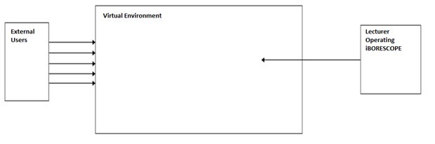

IBoroscope Health Hack Weekend
A Team Pluto Project
The aim of this project was to assess the feasibility of using the iBORESCOPE in an education environment, and if possible implement such a solution. The device holds potential in a teaching environment because it could allow medical students to observe their lecturer as they perform procedures either in real time or saved as a video file for later use. The hardware is accompanied by a free application for mobile devices such as iPad or iPhone. We also found that an Android version was developed but as of yet there is no supported PC version of the software. To improve accessibility we will attempt to find a way to allow PC users to access the video stream.
The main problem with the current software is that the device has very basic WEP encryption making it very easy to break into and crack the password. This poses potential security risks and makes the iBORESCOPE vulnerable to hackers. A secure password could minimise this risk but it remains the ethical responsibility of the user to ensure that the data remains secure.
Another minor problem with the software is that you are required to connect to the WiFi of the device to be able to access the stream. There is also a limit to the number of devices that have access to the WiFi and too many devices at once produces considerable lag that makes the almost unusable. Everyone who connects to the device has the same level of access and this poses potential security risks because everyone has access to changing the settings for the WiFi and password which is integral to the working of the device and there is no factory reset button on the hardware.
There is no source code, API or documentation available for the iBORESCOPE, meaning there is no easy way to build an interface through the existing system. Even accessing it through a web browser you have to be connected to the devices WiFi.
What we propose is a web page that allows users to log on. The lecturer would be a master user who logs on and links the live stream from the camera to the interface. Everybody else logs on as a guest and they can view the feed in real time.

By hosting the feed on a webpage the virtual environment is the server that the feed is being hosted on. A rudimentary login system will mean that only users with the right to see the feed will be able to see it. There are multiple ways this could be implemented in terms of hosting the page (i.e. educational portals; web pages, shared network locations). This improves the security implications and improves the accessibility of the application by allowing students to view the feed without having to install any additional hardware on their computers.
The major restrictions with the hardware compromise the quality of the image so to avoid a grainy effect the size of the video feed is set to 650 x 325. This is close to the original image size of 640 x 480 and has been designed for a native resolution of 1920 x 1080.
Future development of this project will include proper web hosting – likely in conjunction with educational portals (such as Blackboard) or a local host from the lecturer’s machine so that we can remove the interaction with the iBORESCOPE and still make it usable without an internet connection.
The best way to predict the future is to implement it.